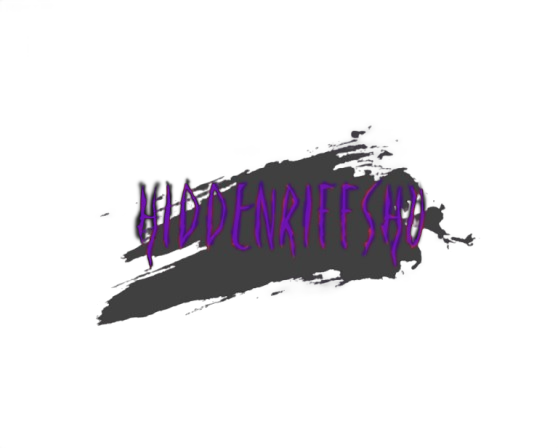

A HiddenRiffsHu magyar alternatív zenekarokkal foglalkozik -akiknek még nem sikerült a felszínre törni-. Ha szeretnél megismerni aktív hazai zenekarokat az alternatív összes műfajában, ez az oldal neked szól! Ha úgy gondolod, hogy a te bandád is ide illik, vedd fel velünk a kapcsolatot!